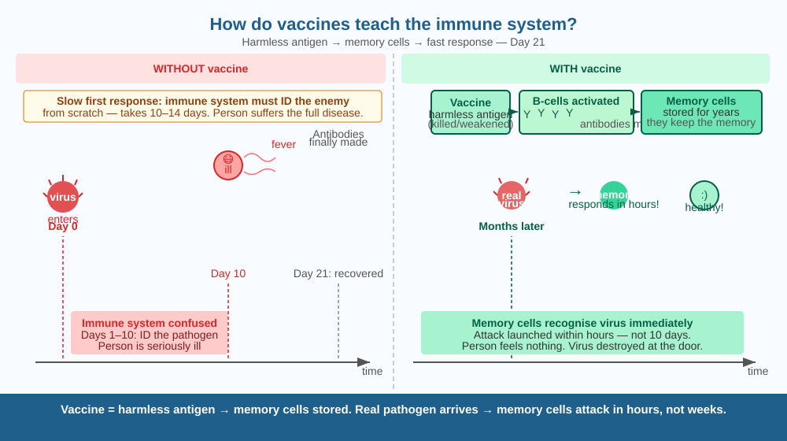

Discover how a tiny injection can protect you from a disease for decades — by running a rehearsal for your immune system before the real enemy arrives.
Millions of people in India take a polio vaccine as infants and never get polio. But the vaccine doesn't contain any medicine that kills the polio virus. How can a liquid — that isn't even killing anything — protect a person for their entire life?
Your immune system learns from experience. The first time your body encounters a pathogen (a disease-causing microbe), it takes 1–2 weeks to mount a full defence. By then, you might be seriously ill. But once it has fought off a pathogen, your immune system keeps memory B-cells and memory T-cells — specialised white blood cells that remember the specific pathogen's antigens (surface markers unique to that microbe).
The second time the same pathogen enters your body, these memory cells recognise it immediately and launch an attack within hours — far too fast for the pathogen to cause disease. This is immunological memory.
A vaccine does the same thing, without the disease. It introduces one of the following: - A killed or weakened version of the pathogen (e.g., oral polio vaccine) - A harmless protein fragment from the pathogen (e.g., Hepatitis B vaccine) - An mRNA blueprint that makes your cells produce one pathogen protein (e.g., some COVID-19 vaccines)
Your immune system sees these harmless antigens, makes antibodies against them, and — critically — stores memory cells. If the real pathogen ever arrives, those memory cells recognise it and destroy it before you get sick.
Think of your immune system as a team of guards who need to see a criminal's photo before they can recognise and arrest him. Without training, they let the criminal (the virus) get deep into the building (your body) before catching him — by then, there's damage. A vaccine shows the guards a photo (antigen) without the actual criminal. They memorise the face. When the real criminal appears later, the guards catch him at the door.

The diagram has two side-by-side timelines. Left: "No vaccine" — virus enters, immune system is confused for 10 days, person becomes ill, recovery takes weeks. Right: "Vaccinated" — vaccine antigens shown entering, memory cells formed, real virus enters months later, memory cells respond within hours, person feels nothing. An inset shows a B-cell producing antibody Y-shapes that bind to the virus's surface proteins.
Look at your left upper arm — most Indians have a small circular scar from the BCG tuberculosis vaccine. Ask an older family member if they remember getting vaccinated as children. In your notebook, list all vaccines you have received from your immunisation card (if available). How many diseases have been prevented by those shots?
Some viruses — like influenza (flu) and HIV — mutate their surface proteins so rapidly that last year's memory cells no longer recognise this year's version. This is why flu vaccines need to be updated every year. HIV has mutated so fast and in so many strains that scientists have not yet made a successful HIV vaccine despite 40 years of trying. What properties would the ideal vaccine target to avoid this mutation problem — should it target a part of the virus that mutates slowly or quickly?
What is the mechanism by which vaccines protect a person against disease?
Why is understanding how the immune system is trained by vaccines more useful than knowing vaccines prevent disease?
If a vaccine only produced a very weak immune response, what would you predict about protection against the real disease?
Two villages, each with 1,000 people. Village A: 850 people vaccinated against measles. Village B: 500 vaccinated. One infected traveller visits each. Measles is highly contagious (R₀ ≈ 15 — each case infects 15 others in a fully unprotected group). Predict which village has an outbreak and which contains it — and explain why the unvaccinated 150 in Village A are still safer than the unvaccinated 500 in Village B.
Edward Jenner's 1796 experiment — the first vaccination — involved a milkmaid who had cowpox (a mild cattle disease) and never seemed to catch smallpox. Jenner deliberately scratched cowpox pus into a boy's arm, then exposed him to smallpox. The boy didn't get sick. Jenner had no knowledge of viruses (they weren't discovered until a century later), no understanding of antibodies, and no idea why it worked. He only knew it did. The word "vaccine" comes from vacca, Latin for cow — in honour of cowpox.
Vaccines train your immune system by introducing harmless antigens. Memory cells form. When the real pathogen arrives, memory cells destroy it in hours — before disease develops. No training → no fast response → you get sick.